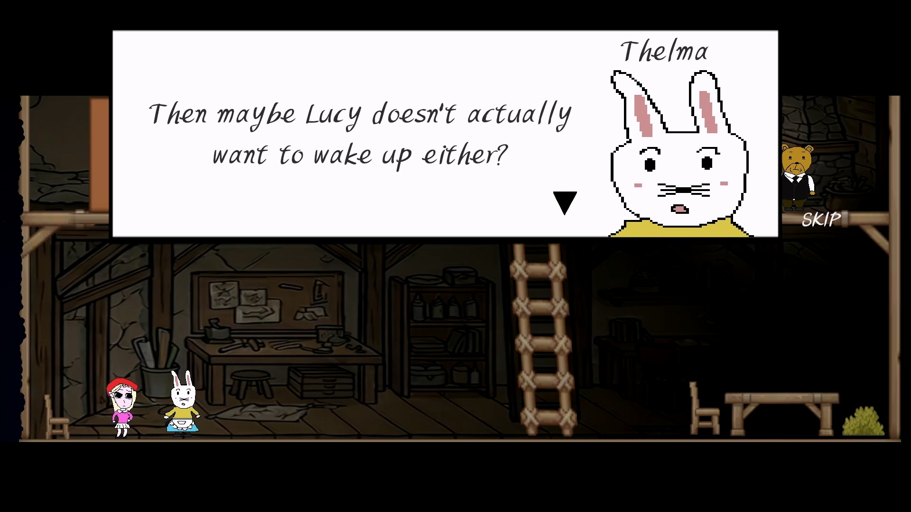

A solo studio that treats games as authored works. We borrow the grammar of genre — only to carve human stories inside it.
Beneath a charming surface, we hide the darkest truths of people.
NationwideSoftware is the studio of a single author. Every line of code, every drawn frame, every turn of the story answers to one vision. We aren't interested in games that merely play well — we build games that mean something once the credits roll.
A fairy tale with two faces. Lucy has forgotten who she is. Trapped in a nightmare that refuses to end, she runs, leaps, and fights through whimsical stages crowded with colorful monsters — charming on the surface, wrong underneath.
Scattered diamonds hold her stolen memories. Each one you recover plays back a fragment of the real world — and those fragments wear a very different face. One layer at a time, a meticulously plotted story peels the fairy tale back, until the truth beneath proves crueler than any nightmare.
The free demo — the prologue through chapter one — is out now on Steam.

Jeon Yeon Jun writes, draws, and builds every part of the worlds under the NationwideSoftware name. The characters you meet are drawn pixel by pixel, by hand.
The work is unafraid of hard subjects — guilt, obsession, the quiet cruelty people inflict without meaning to. Genre is the doorway; the story inside is the point.
A great story can save a person. I know this from experience. In the years when the world felt hateful and hard to bear, what held me together were the stories — in films, in shows, in games and comics. As long as I was deep inside a story, no worry could find me.
Even in the days when I found it hard to love myself, I could love the stories I made.
Just as great storytellers saved my life, I want to save someone's hours with a story that resonates. Games are the most powerful tool a storyteller has ever been given: a novelist stacks hundreds of pages to make you feel for a character, but the moment a player moves one, they already are that character. Immersion is the default — and yet games that stake everything on the story itself are still rare.
What I pursue is a story faithful to its genre, meticulously plotted — one that leaves a deep resonance and something to think about when the ending arrives. The world already has plenty of universally great stories built on enormous budgets. I face what they leave untouched: the dark interior of human beings. Lucy's Nightmare, a tale of self-destruction and addiction, and the next work, The Love Doll, on twisted desire and salvation, are only the beginning.
To everyone who listens to my stories — thank you, truly.
Devlogs, trailers, and the road to release. If you love a well-told story, come along.